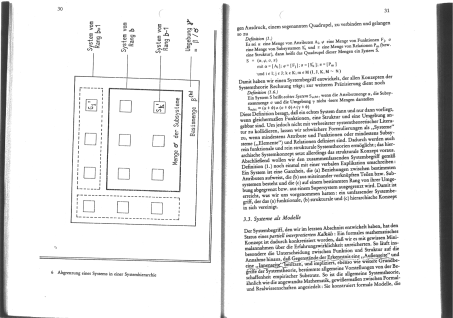
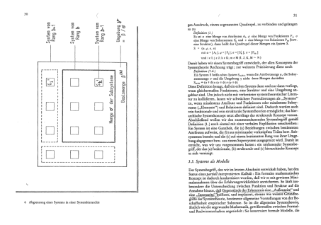

Licensed under the GNU General Public License (GPL). This software
comes with no warranty.
Written by Jens Gulden 2005-2007
Overview
Download
Usage
Options
User Documentation
Examples
Donation
Related Links
unpaper is a post-processing tool for scanned sheets of paper, especially for book pages that have been scanned from previously created photocopies. The main purpose is to make scanned book pages better readable on screen after conversion to PDF. Additionally, unpaper might be useful to enhance the quality of scanned pages before performing optical character recognition (OCR). unpaper tries to clean scanned images by removing dark edges that appeared through scanning or copying on areas outside the actual page content (e.g. dark areas between the left-hand-side and the right-hand-side of a double- sided book-page scan). The program also tries to detect disaligned centering and rotation of pages and will automatically straighten each page by rotating it to the correct angle. This process is called "deskewing". Note that the automatic processing will sometimes fail. It is always a good idea to manually control the results of unpaper and adjust the parameter settings according to the requirements of the input. Each processing step can also be disabled individually for each sheet. Input and output files can be in either .pbm , .pgm or .ppm format, thus generally in .pnm format, as also used by the Linux scanning tools scanimage and scanadf. Conversion to PDF can e.g. be achieved with the Linux tools pgm2tiff, tiffcp and tiff2pdf.
|  |  | |||
unpaper is available for download at http://download.berlios.de/unpaper/unpaper-bin-0.3 .tar.gz.
Source-only versions and older releases are available in the distribution archive of the project development site.
You may also want to browse the source-code online in the CVS archive.
Usage: unpaper [options] <input-file(s)> <output-file(s)>Filenames may contain a formatting placeholder starting with '%' to insert a page counter for multi-page processing. E.g.: 'scan%03d.pbm' to process files scan001.pbm, scan002.pbm, scan003.pbm etc.
-l --layout single Set default layout options for a sheet:
|double 'single': One page per sheet.
|none 'double': Two pages per sheet, landscape
orientation (one page on the left
half, one page on the right half).
'none': No auto-layout, mask-scan-points
may individually be specified.
Using 'single' or 'double' automatically
sets corresponding --mask-scan-points.
The default is 'single'.
-start --start-sheet <sheet> Number of first sheet to process in multi-
sheet mode. (default: 1)
-end --end-sheet <sheet> Number of last sheet to process in multi-
sheet mode. -1 indicates processing until
no more input file with the corresponding
page number is available (default: -1)
-# --sheet Optionally specifies which sheets to
<sheet>{,<sheet>[-<sheet>]} process in the range between start-sheet
and end sheet.
-x --exclude Excludes sheets from processing in the
<sheet>{,<sheet>[-<sheet>]} range between start-sheet and end-sheet.
--pre-rotate -90|90 Rotates the whole image clockwise (90) or
or anti-clockwise (-90) before any other
processing.
--post-rotate -90|90 Rotates the whole image clockwise (90) or
or anti-clockwise (-90) after any other
processing.
-M --pre-mirror Mirror the image, after possible pre-
[v[ertical]][,][h[orizontal]] rotation. Either 'v' (for vertical
mirroring), 'h' (for horizontal mirroring)
or 'v,h' (for both) can be specified.
--post-mirror Mirror the image, after any other
[v[ertical]][,][h[orizontal]] processing except possible post-
rotation.
--pre-shift <h>,<v> Shift the image before further processing.
Values for 'h' (horizontal shift) and 'v'
(vertical shift) can either be positive
or negative.
--post-shift <h>,<v> Shift the image after other processing.
Values for 'h' (horizontal shift) and 'v'
(vertical shift) can either be positive
or negative.
--pre-wipe Manually wipe out an area before further
<left>,<top>,<right>,<bottom> processing. Any pixel in a wiped area
will be set to white. Multiple areas to
be wiped may be specified by multiple
occurrences of this options.
--post-wipe Manually wipe out an area after
<left>,<top>,<right>,<bottom> processing. Any pixel in a wiped area
will be set to white. Multiple areas to
be wiped may be specified by multiple
occurrences of this options.
--pre-border Clear the border-area of the sheet before
<left>,<top>,<right>,<bottom> further processing. Any pixel in the
border area will be set to white.
--post-border Clear the border-area after processing.
<left>,<top>,<right>,<bottom> Any pixel in the border area will be set
to white.
--pre-mask <x1>,<y1>,<x2>,<y2> Specify masks to apply before any other
processing. Any pixel outside a mask
will be set to white, unless another mask
includes this pixel.
Only pixels inside a mask will remain.
Multiple masks may be specified. No
deskewing will be applied to the masks
specified by --pre-mask.
-s --size <width>,<height> Change the sheet size before other pro-
| <size-name> cessing is applied. Content on the sheet
gets zoomed to fit to the appropriate
size, but the aspect ratio is preserved.
Instead, if the sheet's aspect ratio
changes, the zoomed content gets centered
on the sheet. Size-name can also be a
standard name as 'a4', 'letter', etc.
Possible size names are:
a5
a4
a3
letter
legal.
All size names can also be applied in
rotated landscape orientation, use
'a4-landscape', 'letter-landscape' etc.
--post-size <width>,<height>|<name> Change the sheet size preserving the
content's aspect ratio after other
processing steps are applied.
--stretch <width>,<height>|<name> Change the sheet size before other
processing is applied. Content on the
sheet gets stretched to the specified
size, possibly changing the aspect ratio.
--post-stretch <width>,<height> Change the sheet size after other
|<name> processing is applied. Content on the
sheet gets stretched to the specified
size, possibly changing the aspect ratio.
-z --zoom <factor> Change the sheet size according to the
given factor before other processing is
done.
--post-zoom <factor> Change the sheet size according to the
given factor after processing is done.
-bn --blackfilter-scan-direction Directions in which to search for solidly
[v[ertical]][,][h[orizontal]] black areas. Either 'v' (for vertical
scanning), 'h' (for horizontal scanning)
of 'v,h' (for both) can be specified.
(default: 'v,h')
-bs --blackfilter-scan-size Width of virtual bar used for mask
<size>|<h-size>,<v-size> detection. Two values may be specified
to individually set horizontal and
vertical size. (default: 20,20)
-bd --blackfilter-scan-depth Size of virtual bar used for black area
<depth>|<h-depth,v-depth> detection. (default: 500,500)
-bp --blackfilter-scan-step Steps to move virtual bar for black area
<step>|<h-step,v-step> detection. (default: 5,5)
-bt --blackfilter-scan-threshold <t> Ratio of dark pixels above which a black
area gets detected. (default: 0.95).
-bx --blackfilter-scan-exclude Area on which the blackfilter should not
<left>,<top>,<right>,<bottom> operate. This can be useful to prevent
the blackfilter from working on inner
page content. May be specified multiple
times to set more than one area.
-bi --blackfilter-intensity <i> Intensity with which to delete black
areas. Larger values will leave less
noise-pixels around former black areas,
but may delete page content. (default:
20)
-ni --noisefilter-intensity <n> Intensity with which to delete individual
pixels or tiny clusters of pixels. Any
cluster which only contains n dark pixels
together will be deleted. (default: 4)
-ls --blurfilter-size Size of blurfilter area to search for
<size>|<h-size>,<v-size> 'lonely' clusters of pixels.
(default: 100,100)
-lp --blurfilter-step Size of 'blurring' steps in each
<step>|<h-step>,<v-step> direction. (default: 50,50)
-li --blurfilter-intensity <ratio> Relative intensity with which to delete
tiny clusters of pixels. Any blurred area
which contains at most the ratio of dark
pixels will be cleared. (default: 0.01)
-gs --grayfilter-size Size of grayfilter mask to search for
<size>|<h-size>,<v-size> 'gray-only' areas of pixels.
(default: 50,50)
-gp --grayfilter-step Size of steps moving the grayfilter mask
<step>|<h-step>,<v-step> in each direction. (default: 20,20)
-gt --grayfilter-threshold <ratio> Relative intensity of grayness which is
accepted before clearing the grayfilter
mask in cases where no black pixel is
found in the mask. (default: 0.5)
-p --mask-scan-point <x>,<y> Manually set starting point for mask-
detection. Multiple --mask-scan-point
options may be specified to detect
multiple masks.
-m --mask <x1>,<y1>,<x2>,<y2> Manually add a mask, in addition to masks
automatically detected around the --mask-
scan-point coordinates (unless --no-mask-
scan is specified).
Any pixel outside a mask will be
set to white, unless another mask
covers this pixel.
-mn --mask-scan-direction Directions in which to search for mask
[v[ertical]][,][h[orizontal]] borders, starting from --mask-scan-point
coordinates. Either 'v' (for vertical
scanning), 'h' (for horizontal scanning)
of 'v,h' (for both) can be specified.
(default: 'h' ('v' may cut text-
paragraphs on single-page sheets))
-ms --mask-scan-size <size>|<h,v> Width of the virtual bar used for mask
detection. Two values may be specified
to individually set horizontal and
vertical size. (default: 50,50)
-md --mask-scan-depth <dep>|<h,v> Height of the virtual bar used for mask
detection. (default: -1,-1, using the
total width or height of the sheet)
-mp --mask-scan-step <step>|<h,v> Steps to move the virtual bar for mask
detection. (default: 5,5)
-mt --mask-scan-threshold <t>|<h,v> Ratio of dark pixels below which an edge
gets detected, relative to max. blackness
when counting from the start coordinate
heading towards one edge. (default: 0.1)
-mm --mask-scan-minimum <w>,<h> Minimum allowed size of an auto-detected
mask. Masks detected below this size will
be ignored and set to the size specified
by mask-scan-maximum. (default: 100,100)
-mM --mask-scan-maximum <w>,<h> Maximum allowed size of an auto-detected
mask. Masks detected above this size will
be shrunk to the maximum value, each
direction individually. (default:
sheet size, or page size derived from
--layout option.
-mc --mask-color <color> Color value with which to wipe out pixels
not covered by any mask. Maybe useful for
testing in order to visualize the effect
of masking. (Note that an RGB-value is
expected: R*65536 + G*256 + B.)
-dn --deskew-scan-direction Edges from which to scan for rotation.
[left],[top],[right],[bottom] Each edge of a mask can be used to detect
the mask's rotation. If multiple edges
are specified, the average value will be
used, unless the statistical deviation
exceeds --deskew-scan-deviation. Use
'left' for scanning from the left edge,
'top' for scanning from the top edge,
'right' for scanning from the right edge,
'bottom' for scanning from the bottom.
Multiple directions can be separated by
commas. (default: 'left,right')
-ds --deskew-scan-size <pixels> Size of virtual line for rotation
detection. (default: 1500)
-dd --deskew-scan-depth <ratio> Amount of dark pixels to accumulate until
scanning is stopped, relative to scan-bar
size. (default: 0.5)
-dr --deskew-scan-range <degrees> Range in which to search for rotation,
from -degrees to +degrees rotation.
(default: 5.0)
-dp --deskew-scan-step <degrees> Steps between single rotation-angle
detections.
Lower numbers lead to better results but
slow down processing. (default: 0.1)
-dv --deskew-scan-deviation <dev> Maximum statistical deviation allowed
among the results from detected edges.
No rotation if exceeded. (default: 1.0)
-W --wipe Manually wipe out an area. Any pixel in
<left>,<top>,<right>,<bottom> a wiped area will be set to white.
Multiple --wipe areas may be specified.
This is applied after deskewing and
before automatic border-scan.
-mw --middle-wipe If --layout is set to 'double', this
<size>|<left>,<right> may specify the size of a middle area to
wipe out between the two pages on the
sheet. This may be useful if the
blackfilter fails to remove some black
areas (e.g. resulting from photo-copying
in the middle between two pages).
-B --border Manually add a border. Any pixel in the
<left>,<top>,<right>,<bottom> border area will be set to white. This is
applied after deskewing and before
automatic border-scan.
-Bn --border-scan-direction Directions in which to search for outer
[v[ertical]][,][h[orizontal]] border. Either 'v' (for vertical
scanning), 'h' (for horizontal scanning)
of 'v,h' (for both) can be specified.
(default: 'v')
-Bs --border-scan-size <size>|<h,v> Width of virtual bar used for border
detection. Two values may be specified
to individually set horizontal and
vertical size. (default: 5,5)
-Bp --border-scan-step <step>|<h,v> Steps to move virtual bar for border
detection. (default: 5,5)
-Bt --border-scan-threshold <t> Absolute number of dark pixels covered by
the border-scan mask above which a border
is detected. (default: 5)
-Ba --border-align Direction where to shift the detected
[left],[top],[right],[bottom] border-area. Use --border-margin to
specify horizontal and vertical distances
to be kept from the sheet-edge.
(default: none)
-Bm --border-margin Distance to keep from the sheet edge when
<vertical>,<horizontal> aligning a border area. May use
measurement suffices such as cm, in.
-w --white-threshold <threshold> Brightness ratio above which a pixel is
considered white.
(default: 0.9)
-b --black-threshold <threshold> Brightness ratio below which a pixel is
considered black (non-gray). This is used
by the gray-filter. This value is also
used when converting a grayscale image to
black-and-white mode (default: 0.33)
-ip --input-pages 1|2 If '2' is specified, read two input
images instead of one and internally
combine them to a doubled-layout sheet
before further processing.
Before internally combining, --pre-
rotation is optionally applied
individually to both input images as the
very first processing steps.
-op --output-pages 1|2 If '2' is specified, write two output
images instead of one, as a result of
splitting a doubled-layout sheet after
processing. After splitting the sheet,
--post-rotation is optionally applied
individually to both output images as the
very last processing step.
-S --sheet-size <width>,<height> Force a fix sheet size. Usually, the
| <size-name> sheet size is determined by the input
image size (if input-pages=1), or by the
double size of the first page in a
two-page input set (if input-pages=2).
If the input image is smaller than the
size specified here, it will appear
centered and surrounded with a white
border on the sheet. If the input image is
bigger, it will be centered and the edges
will be cropped. This option may also be
helpful to get regular sized output
images if the input image sizes differ.
Standard size-names like 'a4-landscape',
'letter', etc. may be used (see --size).
(default: as in input file)
--sheet-background black|white Sets a color with which the sheet is
filled before any image is loaded and
placed onto it. This can be useful when
the sheet size and the image size differ.
--no-blackfilter Disables black area scan. Individual sheet
<sheet>{,<sheet>[-<sheet>]} indices can be specified.
--no-noisefilter Disables the noisefilter. Individual sheet
<sheet>{,<sheet>[-<sheet>]} indices can be specified.
--no-blurfilter Disables the blurfilter. Individual sheet
<sheet>{,<sheet>[-<sheet>]} indices can be specified.
--no-grayfilter Disables the grayfilter. Individual sheet
<sheet>{,<sheet>[-<sheet>]} indices can be specified.
--no-mask-scan Disables mask-detection. Masks explicitly
<sheet>{,<sheet>[-<sheet>]} set by --mask will still have effect. In-
dividual sheet indices can be specified.
--no-mask-center Disables auto-centering of each mask.
<sheet>{,<sheet>[-<sheet>]} Auto-centering is performed by default
if the --layout option has been set. In-
dividual sheet indices can be specified.
--no-deskew Disables deskewing. Individual sheet
<sheet>{,<sheet>[-<sheet>]} indices can be specified.
--no-wipe Disables explicit wipe-areas.
<sheet>{,<sheet>[-<sheet>]} This means the effect of parameter
--wipe can be disabled individually per
sheet.
--no-border Disables explicitly set borders.
<sheet>{,<sheet>[-<sheet>]} This means the effect of parameter
--border can be disabled individually per
sheet.
--no-border-scan Disables border-scanning from the
<sheet>{,<sheet>[-<sheet>]} edges of the sheet. Individual sheet
indices can be specified.
--no-border-align Disables aligning of the area detected by
<sheet>{,<sheet>[-<sheet>]} border-scanning (see --border-align). In-
dividual sheet indices can be specified.
-n --no-processing Do not perform any processing on a sheet
<sheet>{,<sheet>[-<sheet>]} except pre/post rotating and mirroring,
and file-depth conversions on saving.
This option has the same effect as setting
all --no-xxx options together. Individual
sheet indices can be specified.
--no-qpixels Disable qpixel-mode for deskewing (do not
internally use a 4x bigger image when
rotating).
--no-multi-pages Disable multi-page processing even if the
input filename contains a '%' (usually
indicating the start of a placeholder for
the page counter).
--dpi <dpi> Dots per inch used for conversion of
measured size values, like e.g.'21cm,
27.9cm'. Mind that this parameter should
occur before specifying any size value
with measurement suffix. (default: 300)
-t --type pbm|pgm Output file type. (default: as input)
-d --depth <bits> Output pixel depth. (default: as input)
-T --test-only Do not write any output. May be useful in
combination with --verbose to get informa-
tion about the input.
-in --input-file-sequence Sequence of input filename patterns which
<file-patterns> is repeatedly traversed while resolving
input filenames. Specifying a single
entry is equivalent to the first filename
argument after the options-list.
-out --output-file-sequence Sequence of output filename patterns
<file-patterns> which is repeatedly traversed while
resolving output filenames. Specifying a
single entry is equivalent to the second
filename argument after the options-list.
-si --start-input <nr> Set the first page number to substitute
for '%d' in input filenames. Every time
the input file sequence is repeated, this
number gets increased by 1. (default:
(startsheet-1)*inputpages+1)
-so --start-output <nr> Set the first page number to substitute
for '%d' in output filenames. Every time
the output file sequence is repeated,
this number gets increased by 1.
(default: (startsheet-1)*outputpages+1)
--insert-blank <nr>{,<nr>[-<nr>]} Use blank input instead of an input file
from the input file sequence at the
specified index-positions. The input file
sequence will be interrupted temporarily
and will continue with the next input
file afterwards. This can be useful to
insert blank content into a sequence of
input images.
--replace-blank <nr>{,<nr>[-<nr>]} Like --insert-blank, but the input images
at the specified index positions get
replaced with blank content and thus will
be ignored.
--overwrite Allow overwriting existing files.
Otherwise the program terminates with an
error if an output-file to be written
already exists.
-q --quiet Quiet mode, no output at all.
-v --verbose Verbose output, more info messages.
-vv Even more verbose output, show parameter
settings before processing.
--time Output processing time consumed.
-V --version Output version and build information.
A typical sequence of application would be:
# Scan multiple sheets of paper to .ppm-files (for scanners without automatic # document feeder, use any scan software to manually scan sheets): scanadf [...scanner-specific options...] -o scan%03d.pgm # Run unpaper, performing all auto-corrections on all sheets except on the # title sheet 1, and without auto-detection of masks (incuding deskewing and # centering) on sheets 100-110 and 200: unpaper -v --layout double --pre-rotate -90 --no-processing 1 --no-mask-scan 100-110,200 scan%03d.pgm unpaper%03d.pgm # Alternatively: Run unpaper, joining two input pages together onto one output # sheet (assuming the input files consist of single-page scans). All auto- # corrections are performed with default parameters, after the sheet size # has been set to a horizontally-oriented A4-sheet (see documentation of # parameter --size for available sheet sizes). # The first input page is supposed to appear on the right-hand side of the # first output sheet (as odd page numbers usually do), so a blank page is # inserted into the input-file sequence before the very first input page # in order to leave the left-hand side of the first output sheet empty. unpaper -v --layout double --size a4-landscape --input-pages 2 --insert-blank 1 scan%03d.pgm unpaper%03d.pgm # Convert generated .pgm-files to individual .tiff-files: for i in `ls unpaper*`; do pnmtotiff $i > $i.tiff; done # Combine individual .tiff-files to one multi-page-tiff: tiffcp *.tiff all.tiff # Create PDF-document from multi-page-tiff: tiff2pdf -z -o Document.pdf all.tiff
The source sheets need not to be scanned from
paper directly
but could also originate from a previously created PDF-document or
other
files. This way, unpaper can be used to 'clean' existing documents.
There are
several tools available to convert other file formats to .pgm/.pbm-files for
processing with unpaper (see user documentation for details).
Written by Jens Gulden 2005-2007
Modifications under the GPL are welcome.
Hosted on